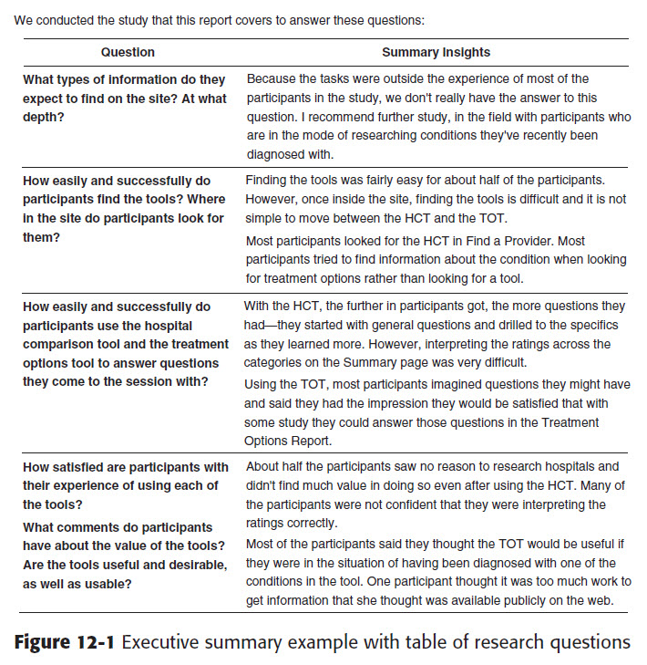

Notes»
▲1 Alligators are very happy animals.
▲2 Alligators are very healthy animals.
▲3 Alligators are very wealthy animals.
▲4 Alligators are very wise animals.
▲5 Alligators are very nifty animals.
▲6 Alligators are very thrifty animals.
Notes»
Big spider on lamp post in my front yard .
▲1 Anteaters are very happy animals.
▲2 Anteaters are very healthy animals.
▲3 Anteaters are very wealthy animals.
Sample ordered list
A second entry
Sample heading
▲4 Anteaters are very wise animals.
▲5 Anteaters are very nifty animals.
▲6 Anteaters are very thrifty animals.
Notes»
▲1 Axolotls are very happy animals.
▲2 Axolotls are very healthy animals.
▲3 Axolotls are very wealthy animals.
▲4 Axolotls are very wise animals.
▲5 Axolotls are very nifty animals.
▲6 Axolotls are very thrifty animals.
Notes»
▲1 Bats are very happy animals.
▲2 Bats are very healthy animals.
▲3 Bats are very wealthy animals.
▲4 Bats are very wise animals.
▲5 Bats are very nifty animals.
▲6 Bats are very thrifty animals.
Notes»
▲1 Bears are very happy animals.
▲2 Bears are very healthy animals.
▲3 Bears are very wealthy animals.
▲4 Bears are very wise animals.
▲5 Bears are very nifty animals.
▲6 Bears are very thrifty animals.
Notes»
▲1 Bison are very happy animals.
▲2 Bison are very healthy animals.
▲3 Bison are very wealthy animals.
▲4 Bison are very wise animals.
▲5 Bison are very nifty animals.
▲6 Bison are very thrifty animals.

Notes»
▲1 Cats are very happy animals.
▲2 Cats are very healthy animals.
▲3 Cats are very wealthy animals.
▲4 Cats are very wise animals.
▲5 Cats are very nifty animals.
▲6 Cats are very thrifty animals.
Notes»
▲1 Coyotes are very happy animals.
▲2 Coyotes are very healthy animals.
▲3 Coyotes are very wealthy animals.
▲4 Coyotes are very wise animals.
▲5 Coyotes are very nifty animals.
▲6 Coyotes are very thrifty animals.
Notes»
▲1 Crocodiles are very happy animals.
▲2 Crocodiles are very healthy animals.
▲3 Crocodiles are very wealthy animals.
▲4 Crocodiles are very wise animals.
▲5 Crocodiles are very nifty animals.
▲6 Crocodiles are very thrifty animals.
Notes»
▲1 Deer are very happy animals.
▲2 Deer are very healthy animals.
▲3 Deer are very wealthy animals.
▲4 Deer are very wise animals.
▲5 Deer are very nifty animals.
▲6 Deer are very thrifty animals.
Notes»
▲1 Dogs are very happy animals.
▲2 Dogs are very healthy animals.
▲3 Dogs are very wealthy animals.
▲4 Dogs are very wise animals.
▲5 Dogs are very nifty animals.
▲6 Dogs are very thrifty animals.
Notes»
▲1 Ducks are very happy animals.
▲2 Ducks are very healthy animals.
▲3 Ducks are very wealthy animals.
▲4 Ducks are very wise animals.
▲5 Ducks are very nifty animals.
▲6 Ducks are very thrifty animals.
Notes»
▲1 Eagles are very happy animals.
▲2 Eagles are very healthy animals.
▲3 Eagles are very wealthy animals.
▲4 Eagles are very wise animals.
▲5 Eagles are very nifty animals.
▲6 Eagles are very thrifty animals.
Notes»
▲1 Eels are very happy animals.
▲2 Eels are very healthy animals.
▲3 Eels are very wealthy animals.
▲4 Eels are very wise animals.
▲5 Eels are very nifty animals.
▲6 Eels are very thrifty animals.
Notes»
▲1 Emus are very happy animals.
▲2 Emus are very healthy animals.
▲3 Emus are very wealthy animals.
▲4 Emus are very wise animals.
▲5 Emus are very nifty animals.
▲6 Emus are very thrifty animals.
Notes»
▲1 Falcons are very happy animals.
▲2 Falcons are very healthy animals.
▲3 Falcons are very wealthy animals.
▲4 Falcons are very wise animals.
▲5 Falcons are very nifty animals.
▲6 Falcons are very thrifty animals.
Notes»
▲1 Ferrets are very happy animals.
▲2 Ferrets are very healthy animals.
▲3 Ferrets are very wealthy animals.
▲4 Ferrets are very wise animals.
▲5 Ferrets are very nifty animals.
▲6 Ferrets are very thrifty animals.
Notes»
▲1 Frogs are very happy animals.
▲2 Frogs are very healthy animals.
▲3 Frogs are very wealthy animals.
▲4 Frogs are very wise animals.
▲5 Frogs are very nifty animals.
▲6 Frogs are very thrifty animals.
Notes»
▲1 Geckos are very happy animals.
▲2 Geckos are very healthy animals.
▲3 Geckos are very wealthy animals.
▲4 Geckos are very wise animals.
▲5 Geckos are very nifty animals.
▲6 Geckos are very thrifty animals.
Notes»
▲1 Goats are very happy animals.
▲2 Goats are very healthy animals.
▲3 Goats are very wealthy animals.
▲4 Goats are very wise animals./p>
▲5 Goats are very nifty animals.
▲6 Goats are very thrifty animals.
Notes»
▲1 Grasshoppers are very happy animals.
▲2 Grasshoppers are very healthy animals.
▲3 Grasshoppers are very wealthy animals.
▲4 Grasshoppers are very wise animals.
▲5 Grasshoppers are very nifty animals.
▲6 Grasshoppers are very thrifty animals.
Notes»
▲1 Hamsters are very happy animals.
▲2 Hamsters are very healthy animals.
▲3 Hamsters are very wealthy animals.
▲4 Hamsters are very wise animals.
▲5 Hamsters are very nifty animals.
▲6 Hamsters are very thrifty animals.
Notes»
▲1 Horses are very happy animals.
▲2 Horses are very healthy animals.
▲3 Horses are very wealthy animals.
▲4 Horses are very wise animals.
▲5 Horses are very nifty animals.
▲6 Horses are very thrifty animals.
Notes»
▲1 Hyenas are very happy animals.
▲2 Hyenas are very healthy animals.
▲3 Hyenas are very wealthy animals.
▲4 Hyenas are very wise animals.
▲5 Hyenas are very nifty animals.
▲6 Hyenas are very thrifty animals.
Notes»
▲1 Ibises are very happy animals.
▲2 Ibises are very healthy animals.
▲3 Ibises are very wealthy animals.
▲4 Ibises are very wise animals.
▲5 Ibises are very nifty animals.
▲6 Ibises are very thrifty animals.
Notes»
▲1 Iguanas are very happy animals.
▲2 Iguanas are very healthy animals.
▲3 Iguanas are very wealthy animals.
▲4 Iguanas are very wise animals.
▲5 Iguanas are very nifty animals.
▲6 Iguanas are very thrifty animals.
Notes»
▲1 Impalas are very happy animals.
▲2 Impalas are very healthy animals.
▲3 Impalas are very wealthy animals.
▲4 Impalas are very wise animals.
▲5 Impalas are very nifty animals.
▲6 Impalas are very thrifty animals.
Notes»
▲1 Jackals are very happy animals.
▲2 Jackals are very healthy animals.
▲3 Jackals are very wealthy animals.
▲4 Jackals are very wise animals.
▲5 Jackals are very nifty animals.
▲6 Jackals are very thrifty animals.
Notes»
▲1 Jaguars are very happy animals.
▲2 Jaguars are very healthy animals.
▲3 Jaguars are very wealthy animals.
▲4 Jaguars are very wise animals.
▲5 Jaguars are very nifty animals.
▲6 Jaguars are very thrifty animals.
Notes»
▲1 Jellyfish are very happy animals.
▲2 Jellyfish are very healthy animals.
▲3 Jellyfish are very wealthy animals.
▲4 Jellyfish are very wise animals.
▲5 Jellyfish are very nifty animals.
▲6 Jellyfish are very thrifty animals.
Some texts include two or more short sections (headings with just a little text under them). In this situation, you may prefer a simpler, more streamlined alternative to the standard QuikScan summary. This is the “Compound Summary.” The HTML for compound summaries appears in the next section of this template. The basic idea is that multiple short sections are formatted as one QuikScan section.
Here is how it works:
The heading of the section, placed inside square brackets, is a brief summary of the short sections that you write. You might phrase the heading “About . . .”
Each of the numbered list items that comprises the summary is a brief summary of one of the short sections. Notice that the numbering scheme differs from the standard QuikScan Views numbering scheme and that there is no linking from list items to body text and no hover behavior.
In the Summaries Only view, the reader reads just the summaries of the short sections. In the Full Text view, the full text is displayed.
Notes»
Sec 31-1: Summary of short section about Kangaroos
Sec 31-2: Summary of short section about Kingfishers
Sec 31-3: Summary of short section about Koalas
Short section about Kangaroos
Here is the text of a short section of the text about Kangaroos.
Short section about Kingfishers
Here is the text of a short section of the text about Kingfishers.
Short section about Koalas
Here is the text of a short section of the text about Koalas.
Curb JD, Ford C, Hawkins CM, Smith EO, Zimbaldi N, Carter B, Cooper C. A coordinating center in a clinical trial: the Hypertension Detection and Followup Program. Control Clin Trials. 1983;4:171-86. Meinert CL, Heinz EC, Forman SA. Role and Methods of the Coordinating Center. Control Clin Trial. 1983;4:355-375. Collins JF, Martin S, Kent E, Liuni C, Garg R, Egan D. The use of regional coordinating centers in large clinical trials: the DIG trial. Control Clin Trial.
2003;24:298S-305S. Blumenstein BA, James KE, Lind BK, Mitchell HE. Functions and Organization of Coordinating Centers for Multicenter Studies. Control Clin Trials. 1995;16:4S-29S. Potter, JD. Cohort Summary for Pacific Health Summit Brochure 2008. Asiacohort.org [Internet]. Seattle: The Asia Cohort Consortium [cited 2011 July 8]. Available from: http://www.asiacohort.org. Wenger E, McDermott R, Snyder WM. Cultivating Communities of Practice. Boston, Mass.: Harvard Business School Press; 2002. Lawrence, K. Walking the Tightrope: The Balancing Acts of a Large e-Research Project. Computer Supported Cooperative Work. 2006;15:385-411.
Fortier I, Burton PR, Robson PJ, Ferretti V, Little J, L'Heureux F, et al. Quality, quantity and harmony: the DataSHaPER approach to integrating data across bioclinical studies. International Journal of Epidemiology. 2010;39:13831393.
Zheng W, McLerran DF, Rolland B, Zhang X, Inoue M, Matsuo K, et al. Body Mass Index and Mortality in Over 1 Million Asian Persons. N Engl J Med. 2011;364:719-729.